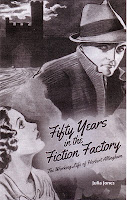
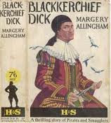
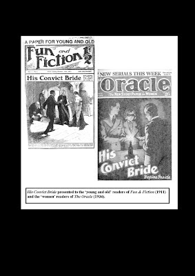
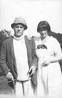

{kind=link}

Herbert Allingham was born in 1867, the year of the Second Reform Bill. Not everyone was happy about this modest extension to the franchise. “The only thing we can do is as far as possible to remedy the evil by the most universal means of education that can be devised. I believe it will be absolutely necessary that you should prevail upon our future masters to learn their letters,” said Robert Lowe MP. The Education Act of 1870 was the vital first step towards compulsory education for all. For the remainder of the nineteenth century young people were more likely to be able to read than older people and males more likely than females. Most of the new readers who wished to continue reading after they had left school wanted fiction. They bought weekly newspapers or magazines, nothing costing more than a penny or, preferably, a halfpenny. These were Allingham’s customers from 1886 when he was 19 years old and his first serial story was published in a penny weekly paper for boys.Over the next fifty years until his death in 1936 he wrote at least ninety-eight identifiably separate serials which were published at least two hundred and ninety nine times in various formats (re-print, abridgement, re-write, re-format) in at least fifty-eight different periodicals or newsagent’s ‘libraries’. The weekly readership of some of these papers was measured in the hundreds of thousands or even millions. Over the fifty years of his publishing career Allingham’s words touched the lives of many working people -- many of them among the most financially impoverished in society.
Yet Allingham did not consider himself to be a ‘proper’ author. To be a proper author, he told his younger daughter, Joyce, you had to be published in hard covers. His older daughter Margery achieved this distinction in 1924, also aged 19, when her first novel, Blackkerchief Dick, was published by Hodder & Stoughton for 7s 6d. By 1924 the papers in which her father’s work was cost tuppence rather than a penny – which would mean that on
{kind=link}

e of Allingham’s readers would be able to purchase nine months of weekly entertainment for the same price as a single hardback novel. It’s an interesting price differential compared with today when new fiction in hardback will probably cost £18.99 whereas an independently published e-novel might be £1.99 – or, briefly, given away. These gaps seem set to widen. A recent survey shows the hardback market strengthening as the physical medium of first publication becomes more consciously valued. Publishing by instalments would seem a completely logical way forward for e-writers who hope to earn more than tea-money for their work.The genres are not, however, interchangeable. Margery Allingham’s 7s 6d novel had been rejected by even a relatively up-market story paper as “insufficiently exciting” for serial publication. When, in the early 1930s, she wrote weekly serials for Answers her style was utterly different from the Campion detective novels she was producing for the hardback market – and much closer to the melodramas that her father had been writing throughout his working life. The requirements for fiction when it is published as journalism are different from fiction when presented in volume form. Even Dickens’s novels required revision when they migrated out of Household Words or All the Year Round and into hard cover editions.
Allingham had s
{kind=link}

tarted his career in a boys’ weekly penny paper, owned by his uncle, whilst also contributing to the Christian Globe, a penny evangelical newspaper founded by his father. He was the best-educated member of his family but as soon as he left university in 1889 he began twenty years editing and writing for a penny story paper, the London Journal – a paper whose readers would have found Dickens too complex and too slow. His most significant successes came in the first decades of the twentieth century when he was writing for the Harmsworth comics – Puck, the Jester, the Butterfly, Merry & Bright, Fun and Fiction. During the war, when his young male readers were dying abroad and paper rationing decimated the comics, he wrote for Womans Weekly, the Happy Home and the People’s Journal. In 1924, when Hodder accepted Margery’s novel, her father’s audience was to be found in Film Fun, the Kinema Comic, My Weekly and the Mascot.The great age of print for popular entertainment was almost over. As well as cinema, wireless was increasingly competing for attention in households with a little more than minimal disposable income. Allingham’s Indian Summer of success came during the depression years of the early 1930s when a combination of penury and a need for comfort reading pushed many people (women in particular) into buying mass-circulation, value-for-money magazines such as the Family Journal and the Household Companion. 1936, the year Allingham died, was the inauguration of the BBC TV service but it’s probably more significant to notice that the early months of 1937, when the last of his serial stories were still being published, saw the first episodes of the world’s longest running wireless soap opera. Entertainment media was diversifying and printed instalment fiction was being superseded.
Allingham had been a master of his dying craft. His serial stories had usually been the lead items in all of these ephemeral, cheaply produced papers: millions of readers had speculated eagerly what might happen next yet none of them would have known anything about the person behind the fiction. Not even his name. There were no obituaries or even foot of the page notifications when he died. For his readers he had only existed as ‘the author of …’– and the title of his most recent serial for that particular paper would be included. He w
{kind=link}

as never identified but was defined only in relation to his own works. If it had not been for his daughters’ devotion in preserving box-fulls of his typescripts and some file copies of the periodicals in which they appeared, Allingham would be completely forgotten – as are the hundreds of other writers and illustrators who worked in this hugely popular field. Allingham represents the modern Anon. How many soap-opera listeners either know or care who contributed a story-line or wrote each individual episode? The creator is an intrusion; reality lies in the fiction.I was given Allingham’s archive by Joyce Allingham and have spent years cataloguing and trying to understand it. Writing his biography has challenged almost every one of my assumptions about literature, authorship and relative cultural values. Rather in the same way that e-publishing is currently forcing so many of us to think again.